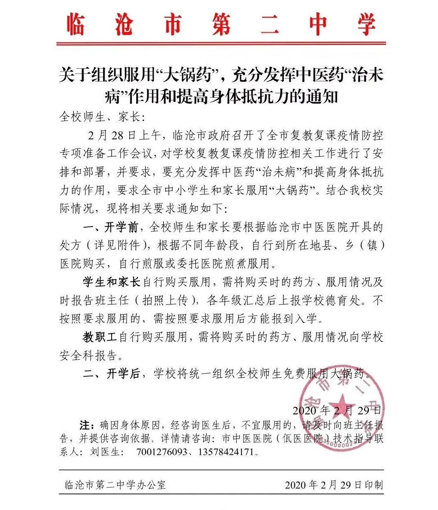

口述实录 | 疫情之下，美国社区开始慌了
原文链接 备份链接 CDC表示一天能做的测试只有100个，有些力不从心。 文、图 | 李 莹 今天（3月2日）是我滞留在美第38天#详见《口述实录 | 我大年夜出发去美国自助游，直到现在还被困在旧金山》#，美国已有100例新冠病毒感染肺炎 …
这种形式主义罔顾科学的粗暴做法，不仅可能伤害学生身体健康，也会给疫情防控添乱。
文 | 沈 林
在国家卫健委发布的系列新冠肺炎治疗方案中，一直强调中西医结合。临床证明，中医经验方在减轻发热咳嗽症状、控制病情进展，提升人体免疫力方面有独特优势。
不过，日前云南临沧市教育体育局强制临沧市各中小学校服用“大锅药”的“霸道”通知，却引发了云南省临沧市部分学生家长的强烈不满——
2月28日，临沧市政府召开全市复教复课疫情防控专项准备工作会议，市委副书记、市长张之政在会上讲话强调，要认真落实精准防控精准施策要求，采取积极有效的防控措施，全力做好2020年春季学期开学准备工作，防止疫情在校园发生，保障师生生命安全和身体健康。
2月29日，临沧市临翔区教育体育局、临沧市第二中学等单位和学校相继下发通知，要求师生及家长喝“大锅药”，以增强身体抵抗力，为受到新冠病毒疫情影响的复教复课做准备。

通知下发后，有自称是临沧市临翔区的家长网友，提供了幼儿园内部群聊记录，群聊中有内容提到：“自3月1日起家长每天下午5点以前须上传喝药照片到班级群”。


在通知里，幼儿园除了要求学生每天上传喝药图片外，还需写明“喝药后有无异常，如拉肚子、头晕等”，引发家长的恐慌甚至愤怒。
对此，有法律专家表示强制服药可能存在违反《药品管理法》、《基本医疗卫生与健康促进法》等的风险，情节严重的，可能触犯刑法。“一旦因上述情况出现了群体性不良反应事件，该规定的决策者和执行者要承担责任，可能涉嫌的罪名有：滥用职权罪、非法行医罪等。”
该通知被曝光后，3月2日，云南临沧紧急纠正了强制师生服用“大锅药”错误做法，并发布了《关于临沧市学校师生服用“大锅药”情况通报》。临沧市教体局表示，服药一事基于自愿原则；争议做法，系个别教体局、市直学校开展，目前“暂不执行原通知”，开学时间已延期。“给师生家长带来不便，在社会上造成不良影响，在此深表歉意、深刻检讨。”


此外，临沧市教体局还表示，大锅药并不能预防新冠肺炎，推出目的系提高师生免疫力。
临沧当地人士介绍，每到换季时，学生常被组织起来统一喝“大锅药”，“已经是一种习惯和传统”。除临沧外，云南多地医疗机构向抗疫一线工作人员免费赠饮过“大锅药”，“大锅药”在云南等地由来已久，部分当地居民也将之用来预防疾病、增强身体免疫力。
“大锅药”，一般指用大锅熬制的传统民族民间中医药。北京中医药大学中药学院教授翟华强接受媒体采访时表示，唐宋时期官方就有将固定成药发放给百姓用来防治瘟疫的传统，“就目前公布的成人方剂来看，十七味药的药性较为平和，剂量也比较小，药物大多属于食药两用，服用比较安全，也是有一定疗效的。”因此，他认为特殊时期熬“大锅药”不应该反对，但也需要注意不能“以偏概全”，强制执行。

新闻图
上海市第一人民医院针灸科寿崟医生也向《新民周刊》表示，“大锅药”的药方虽然问题不大，但还是要看个人体质，中医讲究“辨证施治、一人一方”，但绝不是一刀切地要求每个人喝中药：“新闻里说当地有这种传统，公序良俗的事情我们不去评价；但是该学校把吃大锅药当成入学条件，强制执行令群众反感。并且，这次的大锅药是要家长自行去药房购买，无形中给群众添加了经济负担。”
2月29日的国务院新闻发布会上，北京地坛医院中西医结合科主任医师王融冰也强调，此前推荐的一些药物都是针对症状的治疗，并不是为了预防，“不主张没有症状的人使用中成药预防，没有意义”。
况且，云南临沧市远未到需要人人喝药来预防新冠肺炎的程度。截至2月28日，临沧市累计报告确诊病例1例，且早已治愈出院超过两周，此外无疑似病例。除了可能的输入型风险外，临沧内部的扩散风险并不高，要求人人喝中药，实在有些过犹不及了。
正如光明日报所指出的：当地教育局也好，学校也罢，在做任何决定的时候，都首先需要考虑学生的健康，而非打着防疫的旗号做些胡乱的决策。这种形式主义罔顾科学的粗暴做法，不仅可能伤害学生身体健康，也会给疫情防控添乱。

征集令
《新民周刊》现面向全国征集新冠肺炎采访对象和真实故事：
如果你是参与抗击新冠肺炎疫情的医护人员或其家属，我们希望聆听你的“战疫”故事，也希望传达你的诉求。
如果你是确诊、疑似患者本人或家属，我们希望了解你和家人如何“抗疫”的过程，让外界了解你的真实经历。
如果你是疫情严重地区的普通市民，我们希望展现你的乐观，并倾听你所需的帮助。
如果你是公共服务人员或各类捐助者，我们希望看到你的“最美逆行”，记录下你的无私。
如今，各行各业开始陆续有序复工，如何在疫情中有序恢复经济生产，我们希望了解其中的困难，或是暖心故事。
……
抗击新冠肺炎疫情，我们诚征对疫情了解的社会各界人士，提供相关线索，说出你的故事，让我们用新闻留存这一切。
《新民周刊》新冠肺炎线索征集值班编辑联系方式（添加时请简要自我介绍）：
周一：应 琛 微信号：paulineying0127
周二：金 姬 微信号：gepetta
周三：黄 祺 微信号：shewen-2020
周四：周 洁 微信号：asyouasyou
周五：孔冰欣 微信号：kbx875055141
周六：吴 雪 微信号：shyshine1105
周日：姜浩峰 微信号：jianggeladandong
✳如你需要捐赠物资，可与以下两位工作人员联系:王勇：WangYong-SH 吴轶君：rommy150708（添加时请注明“捐物资”，方便工作人员快速通过您的申请，谢谢。）
新闻是历史的底稿，你们是历史的见证者。期待你的故事、你的线索！

▼
大家还都在看这些
▼
新民周刊所有平台稿件， 未经正式授权
一律不得转载、出版、改编或进行
与新民周刊版权相关的其他行为，违者必究


原文链接 备份链接 CDC表示一天能做的测试只有100个，有些力不从心。 文、图 | 李 莹 今天（3月2日）是我滞留在美第38天#详见《口述实录 | 我大年夜出发去美国自助游，直到现在还被困在旧金山》#，美国已有100例新冠病毒感染肺炎 …
原文链接 备份链接 目前，新冠肺炎疫情在多国持续蔓延，韩国、意大利、伊朗等国感染人数持续增加，比利时、约旦、沙特、塞内加尔、突尼斯、拉脱维亚等国2日宣布出现首例新冠肺炎确诊病例。 据世卫组织最新报告，截至欧洲中部时间3月2日上午10时（ …
原文链接 备份链接 非常时期，武汉成了全国人民挂念、祈福的城市。封城后，武汉人民的真实生活是什么样？随着抗“疫”有条不紊的进行，武汉发生了哪些变化？还存在哪些问题？ 正和岛自1月26日起特别推出“叶青专栏”。叶青是一位定居武汉40年的市 …
原文链接 备份链接 从趋势上看，新冠肺炎全球大流行可能无法避免，中国需一边打好国内阻击战，一边应对全球疫情带来的新风险。 文 | 信娜 朱贺 编辑 | 王小 空格 鉴于中国境外受新型冠状病毒疫情影响的国家和病例数量持续增加，2月28日，世 …
原文链接 备份链接 美国冠状肺炎疫情近日加速蔓延，西海岸社区传播疑似病例增加 工作人员把一个担架从救护车移至柯克兰生命护理中心，该护理中心已发现两起新型冠状病毒的确诊病例。图/法新 文 |《财经》特派记者 金焱 发自华盛顿 编辑 | 苏 …